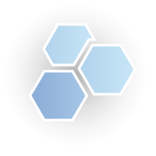
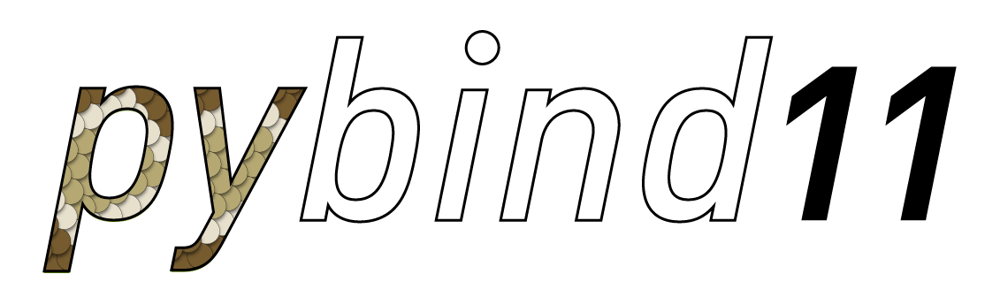

Installation¶
This section contains information on how to build and install the ur_rtde library.
Quick Install¶
If you are on Linux (Ubuntu), you can install ur_rtde with:
sudo add-apt-repository ppa:sdurobotics/ur-rtde
sudo apt-get update
sudo apt install librtde librtde-dev
If you only want to the use the Python interface, you can install ur_rtde through pip:
pip install --user ur_rtde
Notice! Make sure your pip version >=19.3, otherwise the install might fail.
Compatible Robots¶
All CB-Series from CB3/CB3.1 software 3.3
All e-Series
Compatible Operating Systems¶
Currently tested on:
Ubuntu 16.04 (Xenial Xerus)
Ubuntu 18.04 (Bionic Beaver)
Ubuntu 20.04 (Focal Fossa)
macOS 10.14 (Mojave)
Windows 10 Pro x64
Note
The ur_rtde should be compatible with Windows 10. However it has currently only been tested without python bindings. pybind11 supports Microsoft Visual Studio 2015 Update 3 or newer on Windows.
Build Instructions¶
This section describes how to build ur_rtde from source on different platforms. The dependencies of ur_rtde are:
 Note
The pybind11 dependency is optional and are only required if ur_rtde are to be used with Python. The ur_rtde library depends on Boost for networking and threading.
Linux (Ubuntu) and macOS¶
Dependencies¶
You can install Boost on Ubuntu using:
sudo apt-get install libboost-all-dev
On macOS you can install Boost with:
brew install boost
Optionally if you want to use ur_rtde with Python make sure pybind11 is checked out from the submodule before attempting to build using:
git submodule update --init --recursive
Build¶
git clone https://gitlab.com/sdurobotics/ur_rtde.git
cd ur_rtde
git submodule update --init --recursive
mkdir build
cd build
cmake ..
make
sudo make install
Note
If you want Python 2.x support you must use cmake -DPYBIND11_PYTHON_VERSION=2.x .. in this step, since the
default interpreter is Python3. If you do not want to use Python at all, please
use cmake -DPYTHON_BINDINGS:BOOL=OFF ..
Tip
In order to test the interface, download the most recent UR simulator for your robot from here
UR Download. Once installed run the simulator with:
./start-ursim.sh, when the simulator is running, initialize the robot by first clicking the ‘ON’ button,
and next clicking the ‘START’ button. You can now run the examples.
Windows¶
Dependencies¶
Boost precompiled libraries can be found at: https://sourceforge.net/projects/boost/files/boost-binaries/
Note
If you are using Microsoft Visual Studio make sure you download a version of Boost that matches your Microsoft Visual Studio version.
Depending on your setup it may be required to add the Boost library path to the system environment variables.
Optionally if you want to use ur_rtde with Python make sure pybind11 is checked out from the submodule before attempting to build using:
git submodule update --init --recursive
git clone https://gitlab.com/sdurobotics/ur_rtde.git
Visual Studio Build¶
If you are using Microsoft Visual Studio with CMake support (supported since 2017 version). You should be able to navigate to the folder you cloned the repository to and open the ur_rtde as a CMake project. See the image below.

You can find more information about CMake projects in visual studio Here.
Once you have loaded the project navigate to the CMake Settings through ‘Project->CMake Settings for ur_rtde’. Set the following CMake Command Arguments in order for the project to find Boost and disable the Python bindings:
-DBOOST_ROOT=<YOUR_BOOST_ROOT> -DBOOST_LIBRARYDIR=<YOUR_BOOST_LIBRARY_DIR> -DPYTHON_BINDINGS:BOOL=OFF
Tip
Remember you can run the UR Simulator on Windows through the virtual machines provided by UR. In the VMware virtual machine you can set the network adapter to “Bridged” in the ‘Virtual Machine Settings’. If you then obtain the IP address of the robot using ifconfig, you can test the communication with your windows host running the ur_rtde program.
Commandline Build¶
A quick way to compile the interface on Windows, is to do everything from the command line. The following commands can be executed from the command prompt after Boost has been installed.
git clone https://gitlab.com/sdurobotics/ur_rtde.git
cd ur_rtde
mkdir Build
cd Build
cmake -DBOOST_ROOT="<Path:\to\boost_<version>>" -DBOOST_LIBRARYDIR="<Path:\to\boost_<VERSION>\<COMPILER>>" -DPYTHON_BINDINGS=OFF ..
msbuild ur_rtde.sln /property:Configuration=Release /maxcpucount:<NUMBER_OF_CORES>
filling out the system specific variables the setup looks like this for a computer with 8 cores, using visual studio 2019 and boost 1.71.0.
cmake -DBOOST_ROOT="C:\local\boost_1_71_0" -DBOOST_LIBRARYDIR="C:\local\boost_1_71_0\lib64-msvc-14.2" -DPYTHON_BINDINGS=OFF ..
msbuild ur_rtde.sln /property:Configuration=Release /maxcpucount:8
The example above is the basic setup for compiling ur_rtde below you’ll find a list of other commands and what they do.
- -G “Visual Studio 15 2017 Win64”
This command forces the generator to vs 2017 64 bit. On some 64 bit systems when running cmake boost will look for 32bit libraries which are not there.
The equivalent for Visual studio 2019 is: -G “Visual Studio 16 2019” -A x64
- -DBUILD_STATIC=[ON|OFF]
The default value is “OFF”, which means that a dll library is built. This means, that when trying to link against this library runtime. The .dll file must either be moved to the same directory as .exe file. Or the system PATH variable must be set to include Build\<config>
If it is set to ON the libraries will be build statically. This will make the compile time linking libraries a little longer and the output .exe or .lib a little larger.
- -DBoost_USE_STATIC_LIBS=[ON|OFF]
The default is OFF. If set to on it will link statically to Boost libraries. This will give the same benefits/drawbacks as -DBUILD_STATIC, just for the Boost libraries instead.